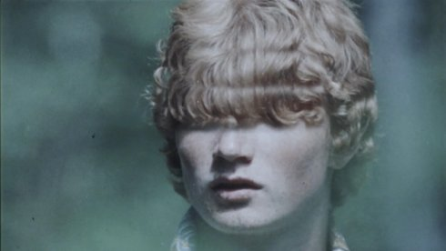

{kind=link}
Horizōn

Sid Iandovka, Anya Tsyrlina
|
CH,
RU, US 2019 7 min | HD | no dialogues
|
Tuesday 15 oct | 8.30 pm | Werkstattkino | short film
night
E-Ticket is a frantic re-cataloguing of a personal archive and a
vehicle for the re-birth of forgotten images. 35mm still photographs are obsessively tape-spliced together, one frame at a time, in evolving rhythmic patterns – views shift between a school trip to India and culminate in documentation of a violent 2005 protest at a World Trade Organization summit in Hong Kong. A re-telling of Dante´s ”Inferno” for the streaming age; freedom of movement reserved for the modern cloud. (Simon Liu)
Sid Iandovka born in Siberia. Artist, musician and filmmaker. He lives and works in Brooklyn, New York and Basel. |
Anya Tsyrlina born in Siberia, Novo-sibirsk. Artist and filmmaker. She has lived and worked in Basel since 2002. |
Films (Sid Iandovka) Phenomenon 2019 | Horizōn 2019 |
Films (Anya Tsyrlina) Filme I Don't Believe In Anarchy 2016 Phenomenon 2019 | Horizōn 2019 |